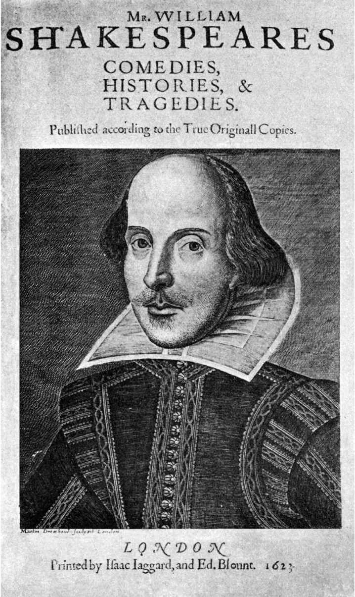

在《闲谈者》（1709）中，约瑟夫·艾迪生把埃德加对多佛悬崖的那段描述特别挑选出来，给予了高度赞扬：“读了这一段却没有感到头晕眼花的人，要么他头脑很清楚，要么他头脑很糊涂。”塞缪尔·约翰逊博士对此有不同看法：“应该说，他头脑里全是悬崖——一片空白。”他对鲍斯维尔说：
围绕某些作品是否取得成功，文学评论总会出现此类争辩。像约翰逊这样的反对声音是非常宝贵的妙药，让我们得以避免被某些自鸣得意的看法所蒙蔽，从而将莎士比亚吹捧为完美无瑕的天才。
不过，约翰逊也承认，“也许没有哪一出戏”能像《李尔王》这样“一直引起强烈关注”，没有哪一出戏能够“如此充分地点燃我们的激情……诗人的想象力如同一股强劲的激流，思维一旦介入其中，就不由自主地被裹挟着向前冲去”。比起其他剧作家，莎士比亚似乎更善于让听众抓住说话者的思绪。二十多年后，查尔斯·兰姆写道：“当我们读剧本时，我们并没有看到李尔，我们自己就是李尔。”不过，对于兰姆来说，只有在阅读过程中，人们才有可能借助想象力，与李尔或哈姆雷特感同身受。在剧场里观看戏剧只是糟糕的替代做法：
（兰姆，《论莎士比亚的悲剧，关于这些作品是否适合舞台表现》，1811）
兰姆认为莎士比亚的悲剧不适合舞台表演，对此我们的第一反应是难以置信。创作戏剧就是为了表演。戏剧作品让那些最优秀的演员取得最杰出的成就：从莎士比亚的好友理查德·伯比奇（一些角色专为他设计），到王政复辟时期的托马斯·贝特顿、18世纪的大卫·加里克、19世纪的埃德蒙·基恩和亨利·欧文、20世纪的约翰·吉尔古德和劳伦斯·奥利弗，以及近期的保罗·斯科菲尔德和伊恩·迈凯伦，辉煌的英格兰舞台上接连涌现出多位哈姆雷特和李尔的扮演者。而且，《哈姆雷特》、《李尔王》，以及莎士比亚的其他作品本身具有鲜明的戏剧性，它们迫切需要通过演出来呈现其中的意义——正如之前提到的悬崖场景、哈姆雷特的戏中戏、麦克白的独白（他提到那位“可怜的伶人/在舞台上时而趾高气扬，时而烦躁不安”）、克莉奥佩特拉想象中的那位尖声说话的演员（他将以“男孩演员”的身份来扮演“女王/像妓女那般卖弄风情”），以及上百个类似的“元戏剧”片段。
或许我们应该体谅兰姆，因为在他所处的时代，剧场存在诸多缺陷。莎士比亚在创作时所针对的舞台是一个只有极少数布景和景观效果的平台，并且舞台的演出区域向前延伸与观众席直接接触，中间没有阻碍，可以充分展现戏剧表演的活力。然而，到了18世纪和19世纪，位于考文特花园街区和特鲁里街的皇家剧场采用了洞穴式结构，弧形的舞台前部将演员与观众隔离开来，并且在表演过程中加入了精心设计的场景变换和大量的附加道具。这样做的目的是为了追求视觉效果，但实际上却妨碍了戏剧表演。如果兰姆借助时光旅行回到莎士比亚的时代，或者前往未来参观空间紧凑的黑盒子工作室小剧场，他所看到的演出或许就会让他感受到李尔的思维。
另一个原因是兰姆没有机会看到这出戏的原始形态：从王政复辟到维多利亚时代早期这一百五十年的时间里，在英格兰的戏剧舞台上，这出戏的原始版本已经被那洪·泰特改写的版本所取代，新剧本表现出浪漫雅致的风格，去掉弄人的角色，并且安排了幸福的结局，让科迪利娅嫁给埃德加。
如果我们是戏剧工作者，我们可能会从兰姆的立场走向另一个极端，认为莎士比亚的戏剧作品应该一直作为舞台表演的脚本，而不是作为学术研究或课堂分析的文本。我们可能会认为，出于应付考试的目的，将莎士比亚使用的高难度语言强行灌输给学生，这破坏了戏剧表演带给我们的愉悦和启迪。当情节发展和人物关系具有强烈吸引力的时候，哪怕我们发现有些话的意思难以确定（比如，哈姆雷特说的“先王也曾允诺相应的部分”；或者李尔的弄人说的“啊，老伯，干燥屋子里的宫廷圣水，不比这户外的雨水好得多？”），也不影响我们对作品的欣赏。
我们或许会说，戏剧作品在成为文学之前，首先是舞台表演。当演员和观众在剧场鲜活的共享空间中相遇时，莎士比亚的个人风格才算是充分表现出来。为了支持这一观点，不妨将莎士比亚与本·琼生进行对比。本·琼生在出版他的剧作前做了精心准备，删去了专为舞台表演设计的滑稽内容，但是莎士比亚对于出版剧作并使之流芳百世并不感兴趣。他是一名实践型的剧作家，是第一个在剧团内部担任固定创作职务的戏剧家。他为特定的演员、舞台空间和观众（包括公共的、私人的和王室的观众）进行创作。如果他得知他的舞台脚本最终变成了文学作品，被人从不同视角——包括道德、心理学、形式、政治、社会学、历史学、哲学和传记等多种视角——进行解读，并且相关阐释文字的数量仅次于《圣经》，比世界历史上其他文学作品都要多，他一定会感到震惊。
还有一种说法认为，莎士比亚并不是具有文学性的戏剧家，但这样的说法也存在争议。莎士比亚的演员同行约翰·黑明斯和亨利·康德尔显然考虑到他（去世后）的利益，所以才把他的剧作以精美的对开本形式出版，使其成为文学作品，并且在序言中敦促购买者，要反复阅读他的作品。
甚至在此之前，读者就可以读到莎士比亚将近一半的戏剧作品，主要是悲剧和历史剧，有些版本还获得了剧团授权。他生前出版的几部剧作（《理查三世》、《哈姆雷特》和《李尔王》）的长度都超过标准，当时伦敦的戏剧舞台所允许的公共演出时长为两到三个小时，这几部剧本不经删减就无法在规定时间内完成演出。因此，这些出版的剧本很可能是莎士比亚本人所使用的文本，他在创作时完全明白，要想将这些作品搬上舞台，必须先进行删减和改写。

图6 莎士比亚的剧作就此变成文学作品？1623年第一对开本的标题页，确立了喜剧、历史剧和悲剧的文类区分。
根据再版的频率（这是文学市场需求量最可靠的指标）来判断，在莎士比亚生前，他有三部作品最受读者欢迎，其中两部是《亨利四世》（上）（以约翰·福斯塔夫爵士和绰号“烈火骑士”的亨利·珀西这两位人物而闻名）和《理查三世》（以同名反面角色而闻名）。第三部是匿名出版的田园喜剧《穆采多罗斯》（1598，由莎士比亚的剧团补充内容后于1610年再次上演）。那个时代再版次数最多的长诗是莎士比亚年轻时描写情爱的力作《维纳斯与阿多尼斯》。很显然，在莎士比亚生前，他的作品不仅被搬上舞台，而且广为阅读。
然而，在莎士比亚的作品成为文学经典的过程中，第一对开本起到了极为重要的作用。黑明斯和康德尔把莎士比亚的作品分为三类——喜剧、历史剧和悲剧——从而使读者注意到他的多才多艺。本·琼生专门为莎士比亚写了一首诗，作为作品集的序言，称赞他在悲剧和喜剧这两个领域足以媲美古典时期的优秀戏剧家。琼生还认为，莎士比亚已经超越了英格兰文坛的诸位前辈，包括约翰·黎里、托马斯·基德和克里斯托弗·马洛。黎里的作品《恩底弥翁》（1591）和《伽拉忒亚》（1592）为伊丽莎白时代的喜剧奠定了基础，这些精致的作品以才智、搏斗、求爱，以及专为男孩演员设计的易装情节为特色；托马斯·基德的《西班牙悲剧》（1588）是血腥复仇型悲剧的原型；克里斯托弗·马洛率先创作了风格雄浑的素体诗，并塑造了不自量力的反英雄形象——试图征服一切的帖木儿大帝、马基雅维利式的阴谋家、马耳他的犹太富翁巴拉巴斯，以及精力充沛的约翰·浮士德博士。黎里没有写过悲剧，马洛和基德都不善于创作喜剧。那个时代另一位杰出的喜剧作家是本·琼生——柯勒律治认为《炼金术士》（1610）是情节最完美的文学作品之一——但是琼生的悲剧写得很糟糕：1603年，《赛扬努斯的覆灭》在环球剧场上演时遭遇惨败。相比之下，莎士比亚在悲剧和喜剧这两个领域都迅速赢得赞誉。此外，他的名气还得益于一种独特的创新手段，那就是用多部剧作构成一个系列来讲述本民族的历史，将贵族和平民放在一起，内容五花八门，既包括历史著作中的战役和篡位，也包括酒馆和旅途中的虚构故事，比如引人瞩目的约翰·福斯塔夫爵士，以及发生在盖兹山的极为滑稽的拦路抢劫事件。
莎士比亚生前广受赞誉，在第一对开本出版后，他的名声更加显著。但是，起初人们并不认为他在同时代的所有作家中独领风骚。理查德·贝克爵士在《英格兰君王编年史》（1643）中提出的看法具有代表性，他认为“对剧作家而言，对曾经做过演员的剧作家而言，威廉·莎士比亚和本杰明·琼生这两个名字必将流传后世”。